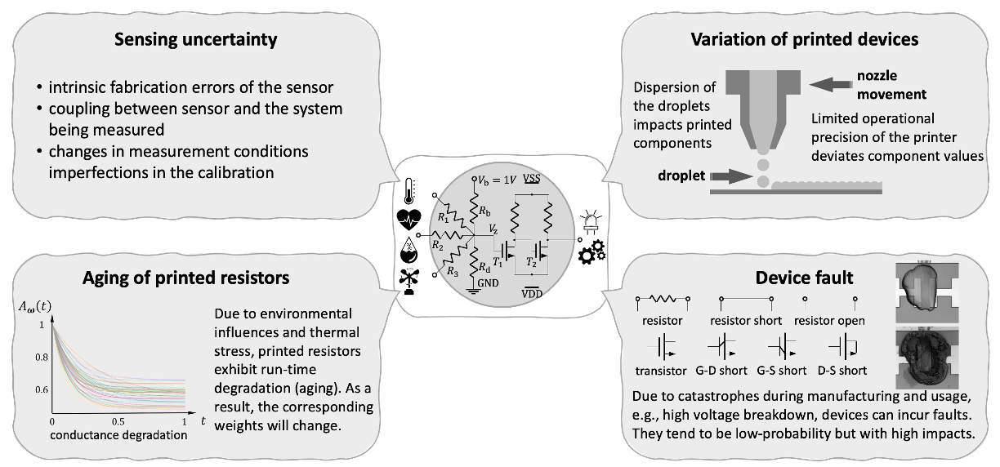
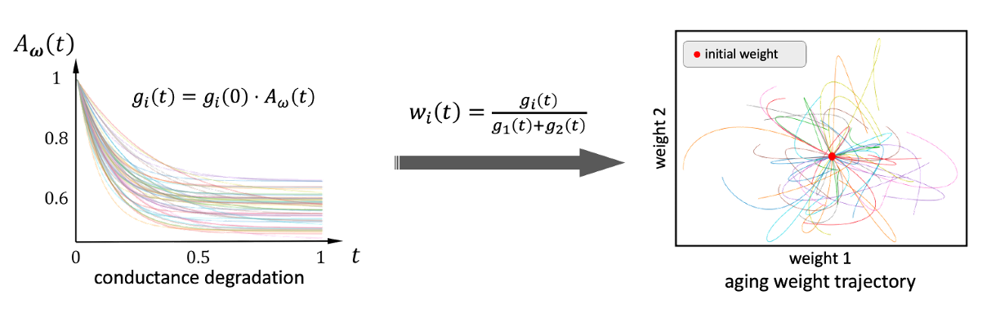
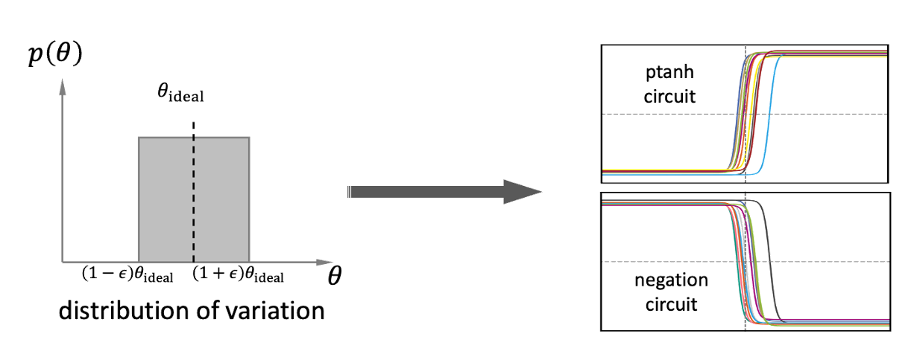
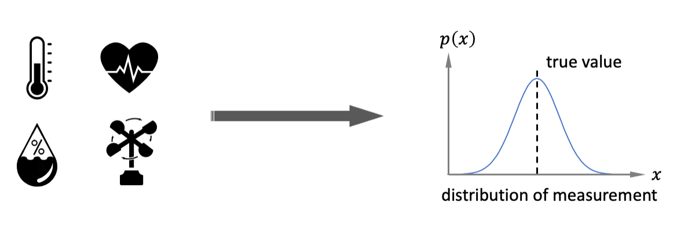
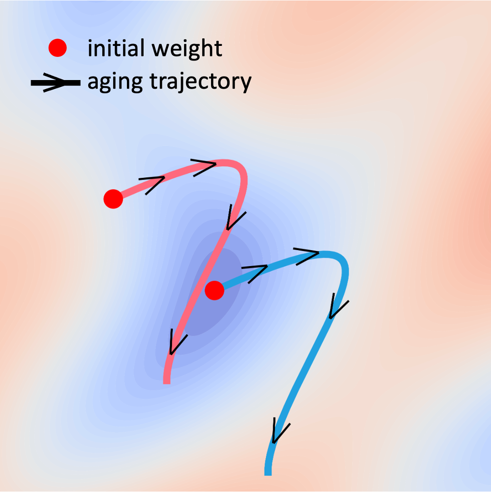

It is inevitable that there will be deviations between designed
circuits and actual circuits, either from limited manufacturing
precision, aging of the devices, or even failure of some components.
These deviations can cause the circuit to produce unreliable
outputs. Thus, it is important to consider these factors during the
circuit design process.
It is notable that circuit reliability is a multifaceted issue that
can be optimized from a variety of perspectives, including
materials, manufacturing processes, and so on. My work focuses on
optimization at the algorithmic level, where the reliability of a
circuit can be improved by designing parameters that are insensitive
to changes.

Figure 1: Factors that impact the performance of neuromorphic
circuits.
Factors that impact reliability
Manufacturing error is one of the most significant factors.
Due to the limited operation precision of the manufacturing
equipments and the e.g., the dispersion of the inks in printed
electronics, the deviation shows a uniform distribution around the
designed value.
Aging changes the component values continuously over time.
The aging process of the PEDOT:PSS resistor follows a
exponential-like curve.
Sensing uncertainty, as a part of the whole electronics, is
also a factor that impacts the reliability of the neuromorphic
circuits. This error is a synthetical result from fabrication error,
coupling between sensor and object being measured, environmental
noise, etc. It is generally modeled as a Gaussian distribution.
Device fault, which generally caused by catastrophe during
fabrication or usage. Unlike manufacturing error, fault usually
leads to more unacceptable consequences, such as short circuit, open
circuit, etc.
Other factors, which remains to be explored.
How do they impact the circuit?

Figure 2: Impact of aging on the weights.
Aging changes the conductances along with time. as the
weights are emulated by the ratio of conductances, the aging
trajectories of weights are random curves around their original
position. Figure 2 shows some aging trajectories of the weights in a
2-dimentional case.

Figure 3: Impact of manufactuing error on nonlinear circuits.
Manufacturing error also impact the weights. Simultaneously,
the manufacturing error also changes the conductances in the
nonlinear circuits, i.e., printed tanh-like circuit and the negation
circuit. Figure 3 shows some transfer characteristics of the
nonlinear circuits with varying conductances and transistances. (In
printed electronics, the property of transistors are affected by
their geometric features.)

Figure 4: Sensing uncertainty.
Sensing uncertainty does not impact the computing system
itself, but rather adds an additional noise onto the true value.
Reliability-aware training of neuromorphic circuit
The objective of reliability-aware training is to improve the
expected performance w.r.t. the stochastic noisy factors. For
example, in the aging-aware training, the training objective is
However, the optimization variable is not a value but a function.
Through reparameterization we can extract \( \theta_0 \) from \(
\theta(t) \) by
$$ \theta(t) = \theta_0 \cdot A_{\omega}(t), $$
where \( \theta_0 \) is the surrogate conductance at \(t=0\), i.e.,
the manufactured value, \( A_{\omega}(t) \) refers to aging-decay,
and \( \omega \) is stochastic variable that determines the aging
trajectory. Therefore, the training objective can be rewritten as
This objective function can be numerically estimated by Monte-Carlo
integration, and then is will be able to be optimized through
gradient descent. Other factors can also be included into the
training objective in similar way.

Figure 5: Visualization of aging-aware training.
Figure 5 exemplarifies a simple example of aging-aware training. The
pink curve has an initial weights with higher loss, but the whole
aging trajectory falls into a low-loss region. In contrast, the blue
curve has a lower loss at the beginning, but the aging trajectory
leads to a higher loss.
Related Materials
H. Zhaoet al. Highly-dependable printed neuromorphic circuits based on additive manufacturing. Flexible and Printed Electronics (IOP-FPE), vol. 8, no. 2, p. 025018, 2023.
[PDF]
H. Zhaoet al. Highly-Bespoke Robust Printed Neuromorphic Circuits. In Proceedings of Design, Automation & Test in Europe Conference & Exhibition (DATE), IEEE, 2023.
[PDF][Slide][Github][YouTube]
H. Zhaoet al. Aging-Aware Training for Printed Neuromorphic Circuits. In Proceedings of International Conference on Computer-Aided Design (ICCAD), IEEE & ACM, 2022.
[PDF][Slide][Github][YouTube]
(submitted) P. Pal et al. Fault Tolerant Circuit Design Analysis for Printed Neural Network Architectures. In Proceedings of the European Test Symposium (ETS), IEEE, 2024.